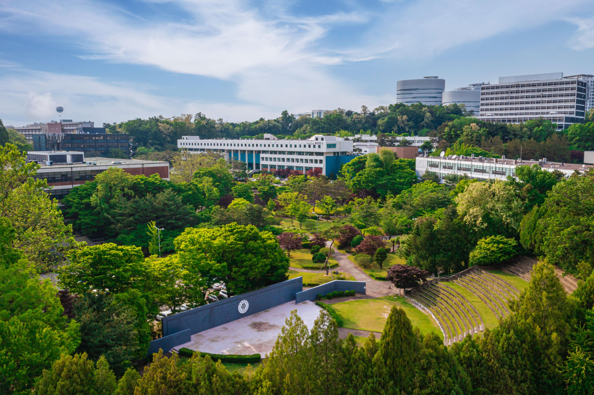
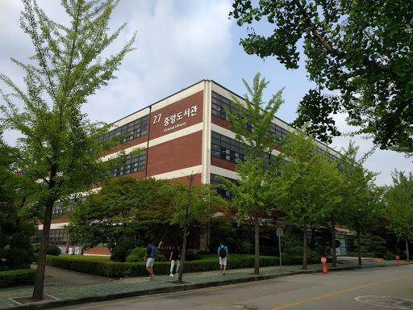
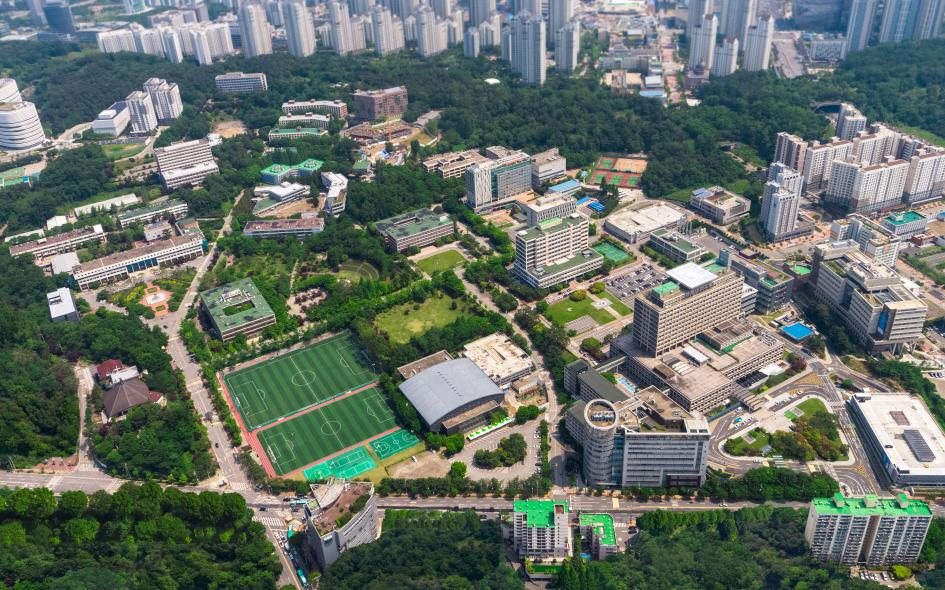
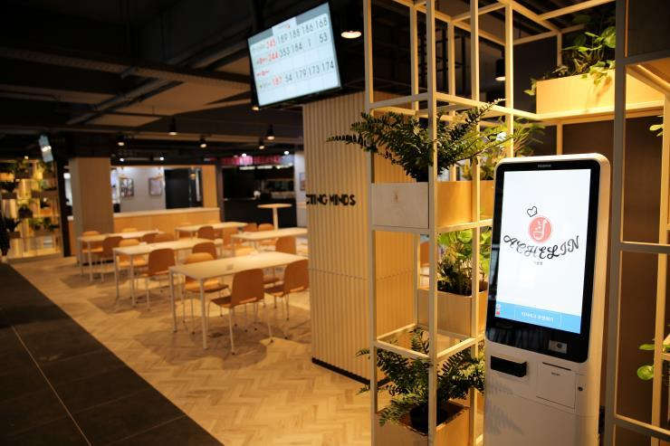
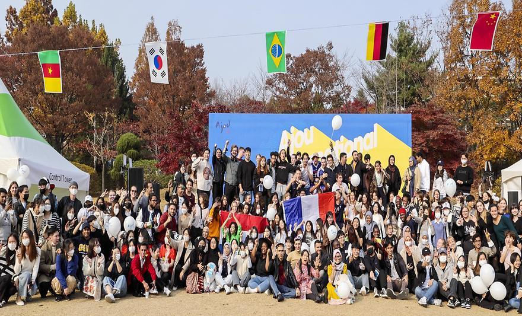

Discover the spaces, facilities and experiences that make life at Ajou University unique.
Ajou University's campus brings together modern learning spaces, research facilities, libraries, dining areas and places where students can connect, relax and enjoy university life.

Located in Suwon, South Korea, the Ajou campus provides a vibrant environment for academic learning, research and student activities.
From classrooms and laboratories to open spaces and student facilities, the campus is designed to support both academic and everyday university life.
The Central Library provides students with a dedicated environment for studying, research and accessing academic resources.
Quiet study areas and learning spaces make the library an important part of everyday student life at Ajou.


Ajou's campus includes open spaces where students can take a break, meet friends and enjoy life outside the classroom.
These shared spaces contribute to the university's active and welcoming campus atmosphere.
Dining facilities provide convenient options for students throughout the university day.
The cafeteria is also a natural place for students to meet, relax and spend time together between classes.


Ajou campus life gives students opportunities to meet people from different backgrounds, participate in activities and build lasting connections.
These experiences become an important part of university life beyond academics.
Spaces across campus are designed to support different parts of the student experience.
Libraries and academic spaces that support focused study and research.
Shared spaces where students can connect, collaborate and build friendships.
Open areas and facilities that make everyday university life more enjoyable.
Convenient facilities that support students throughout their day on campus.
Discover a campus where learning, innovation and student life come together.
CONTACT AJOU